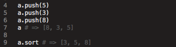
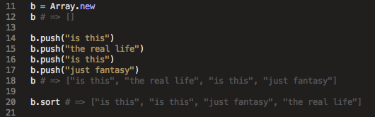
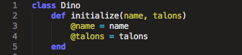
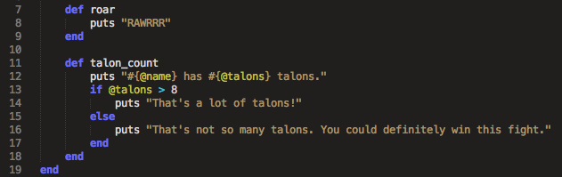
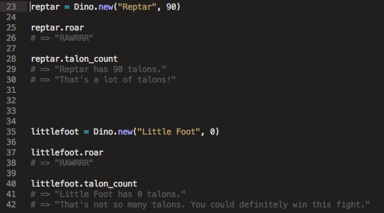

Well before anyone gets into writing Ruby classes, they learn how to call methods on a class. An array, for example, has access to all manner of built-in methods. These methods work for any array, any time. That's because any new array is technically a new instance of the Array class.
From here, you can call different methods on the array like #push and #sort. Those are methods built-in to the Array class and will work on any array.
 While creating instances of built-in classes is super cool, it can get really boring to call the same three classes all the time. Luckily, Ruby is dynamic enough to allow a user to write new classes with its own methods.
Writing your own class is useful when you want to define specific behaviors for a specific type of object and call on those behaviors many times.
For example, if you wanted to create a virtual dinosaur (and I don't mean an obsolete OS), you could start off like this:
The first line - class Dino - tells Ruby that you want to create a class called Dino. The first method you'll want to write in any class is the initialize method. Anything you write in here will load as soon as you call a new instance of the class, and any arguments you give to initialize can be arguments you pass to a new instance of the class.
After initialize, you can write any methods you want class instances to be able to perform. If you want your dinosaurs to roar, you can include a roar method. Likewise, if you want to print your chances of winning a fight against a dinosaur, you can include that method as well.
The @ sign in front of the variable names in initialize and talon_count signal to Ruby that you want that variable to be accessible by all methods within the class. That way, you don't have to keep passing the same arguments to the class methods. talon_count accepts no arguments but still handles the instance variables flawlessly.
Now you can build a whole menagerie of basic dinosaurs that all roar and all have some amount of talons, and you only have to write the roar and talon_count functions once!
8.17.2014